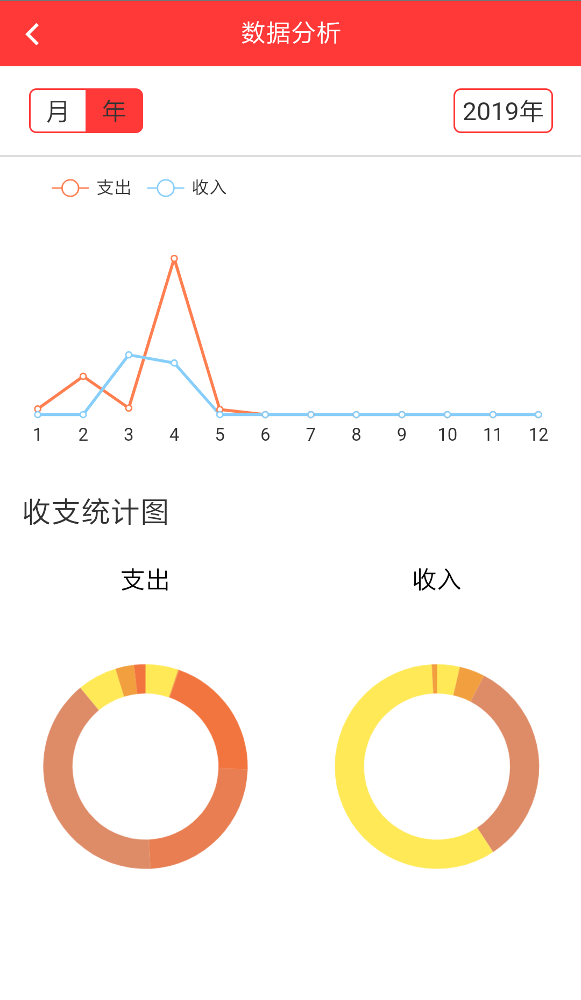
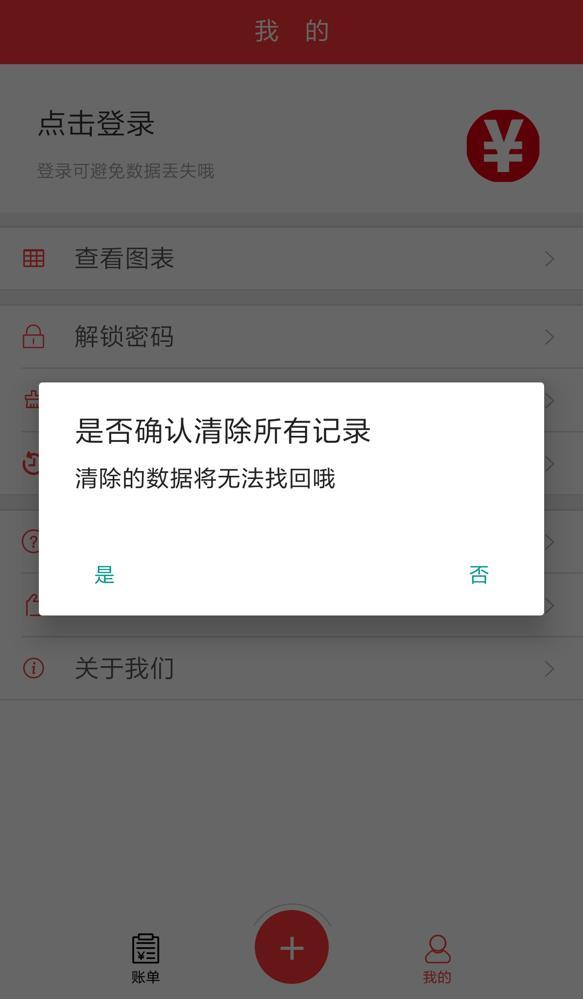

-
1.如何记账?
在首页点击屏幕下方中间的加号，即可进入记账页面，在记账页面选择支出或者收入，点击图标选择收支种类，页面下方输入金额，日期框选择日期（默认为当天），即可记录资金流水。（PS必须选择收支种类以及输入正确的金钱格式，不然会提示无法记录）
-
2.如何查看资金流水情况?
首页即为资金流水情况，默认为当年当月，日期大的在上，页面左上方可选择年月，年月旁为当月收入支出的总况，下方以天为单位记录，展示每天的收支情况以及总况。
-
3.如何删除单条记录?
单击删除的列表项，在弹出的对话款中选择“是”，即可删除单条记录，需要注意的是记录清除则无法找回。
-
4.如何登录?
暂未开放登录功能
-
5.如何查看资金流动趋势?
在首页中点击我的->查看图表，即可进入。默认为当年当月的图表情况，点击“月”图标可切换月份和年份，查看月报表。点击“年”图标可切换年份，查看年报表。折线图默认只显示支出情况，可点击“收入”以及“支出”图例进行显示和隐藏。
 -
6.如何查看资金类别所占比例?
在首页中点击我的->查看图表，即可进入。默认为当年当月的图表情况，点击“月”图标可切换月份和年份，查看月报表。点击“年”图标可切换年份，查看年报表。环状图为收支情况所占的比例，点击或者在图上滑动可查看名称，消费金额以及所占比例。

-
7.如何查看资金类别排行榜?
在首页中点击我的->查看排行，即可进入。默认为当年当月的图表情况，点击“月”图标可切换月份和年份，查看月报表。点击“年”图标可切换年份，查看年报表。
-
8.如何设置密码?
暂未开放密码解锁功能
-
9.如何清除缓存?
在首页中点击我的->清除缓存，即可清除应用缓存，清除应用缓存不影响应用数据
-
10.如何清除记录?
在首页中点击我的->清除记录，在弹出的对话款中选择“是”，即可清除所有记录，需要注意的是记录清除则无法找回。
